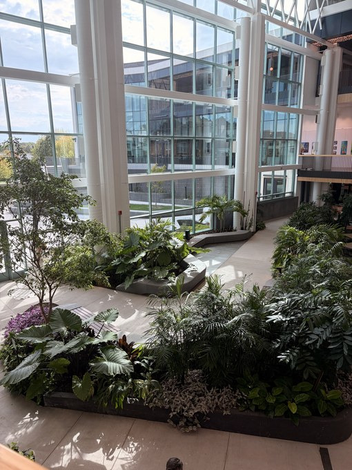
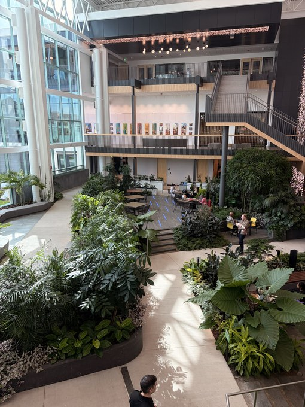
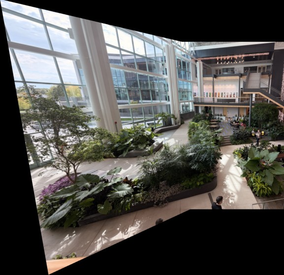

Panorama Stitching from Overlapping Photos
Two overlapping photos of an atrium, aligned and stitched into one wider view.
Photo 1

Photo 2

Stitched panorama

I used OpenCV’s SIFT features to find matching points, then used RANSAC to reject unreliable matches and estimate the perspective transform. I implemented inverse warping to align the images on a shared canvas and used feather blending to soften the seam.
I tested the pipeline on photos taken by rotating the camera and on a flat wall photographed from two positions. I also tried moving the camera sideways through a scene with objects at different depths. In that case, a single transform couldn’t align the foreground and background at the same time.